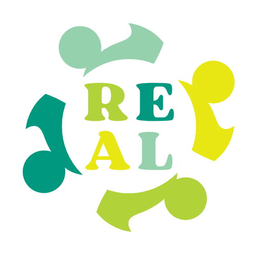
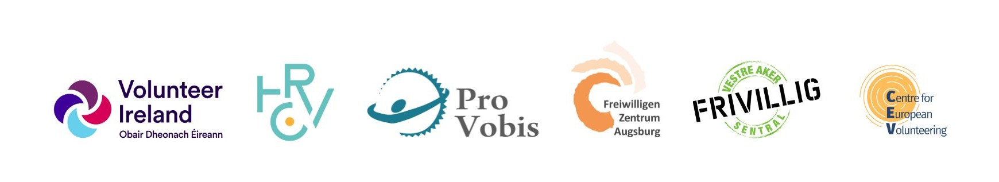

Vorsorge wird vor der Krise aufgebaut: Was das REAL-Projekt vom Ehrenamt in Europa lernt
Lesen Sie den Artikel auf Norwegisch, Englisch, Deutsch, Kroatisch oder mit Schnelllesen.
Woran denken wir eigentlich, wenn wir von Vorsorge sprechen?
Für viele gehen die Gedanken sofort zu Blaulicht, Evakuierung, Notstrom, Wasservorräten, Rettungsdiensten und kommunalen Notfallplänen. All das ist wichtig. Es ist absolut entscheidend, dass die etablierten Strukturen funktionieren: Polizei, Feuerwehr, Gesundheitswesen, Zivilschutz, Kommunen, Regierungspräsidien, das Rote Kreuz, die Norwegische Volkshilfe und andere zentrale Akteure des Bevölkerungsschutzes.
Das REAL-Projekt geht es nicht darum, diese Partnerschaften infrage zu stellen. Im Gegenteil. Es geht darum, sie um eine breitere Perspektive zu ergänzen.
Denn Vorsorge handelt nicht nur davon, was wir tun, wenn die Krise eintritt. Sie handelt auch davon, wie wir lokale Gemeinschaften aufbauen, die mehr aushalten, bevor die Krise kommt. Sie handelt von Menschen, die einander kennen, von Organisationen, die wissen, wie sie beitragen können, von Freiwilligen, die geschult worden sind, und von lokalen Gemeinschaften, in denen Vertrauen, Zusammenarbeit und praktische Handlungsfähigkeit bereits vorhanden sind.
Das ist der Ausgangspunkt für REAL – Resilience, Empowerment and Active Leadership – eine durch Erasmus+ finanzierte Partnerschaft zwischen sechs europäischen Partnern: Volunteer Ireland aus Irland, Pro Vobis – National Resource Center for Volunteering aus Rumänien, Freiwilligen-Zentrum Augsburg aus Deutschland, das Croatian Volunteer Development Centre aus Kroatien, das Centre for European Volunteering aus Belgien und Vestre Aker Frivilligsentral aus Norwegen.
Gemeinsam erforschen wir, wie ehrenamtliches Engagement die Widerstandsfähigkeit lokaler Gemeinschaften stärken kann. Nicht nur in akuten Krisen, sondern auch angesichts des demografischen Wandels, des Klimawandels, sozialer Isolation, Ausgrenzung und des wachsenden Drucks auf öffentliche Dienste.
Im Rahmen des Projekts haben die Partner Beispiele guter Praxis aus verschiedenen Ländern zusammengetragen. Als wir in diesem Frühjahr in Măguri-Răcătău in Rumänien zusammensaßen und unsere Erfahrungen teilten, wurde deutlich, wie unterschiedlich unsere Ausgangslagen sind – und zugleich, wie viel wir gemeinsam haben. Die Beispiele zeigen, dass Vorsorge keine einzelne Sache ist. Sie besteht aus vielen kleinen und großen Handlungen, die im Laufe der Zeit in ein System gebracht werden.
Ehrenamt als Teil des gesellschaftlichen Fundaments
Eines der norwegischen Beispiele im Projekt ist die Norwegische Frauenvereinigung für Volksgesundheit (Norske Kvinners Sanitetsforening). Die Organisation wurde 1896 gegründet und hat in mehr als 130 Jahren gezeigt, wie Fürsorge, Gesundheitsarbeit, Frauengemeinschaft und lokale Organisation Teil der gesellschaftlichen Vorsorge werden können.
Die Sanitetskvinnene haben lokale Ortsgruppen im ganzen Land und eigene Notfallhilfe-Gruppen, die in Krisensituationen Unterstützung leisten können. Sie arbeiten mit Kommunen, Rettungsdiensten und anderen Akteuren zusammen, doch ihre Arbeit reicht weit über akute Einsätze hinaus. Sicherheitstreffen, Erste-Hilfe-Schulungen, Informationsarbeit, Vorsorge für ältere Menschen und die Begleitung von Angehörigen sind Beispiele dafür, wie ehrenamtliches Engagement Menschen im Alltag sicherer machen kann.
Wenn Menschen mehr lernen, mehr Leute kennen, Selbstvertrauen gewinnen und wissen, an wen sie sich wenden können, bauen wir Vorsorge auf. Nicht dramatisch, aber wirksam.
Ein weiteres norwegisches Beispiel ist Ja til eldre – der Thinktank in Bogstad, koordiniert von Odd Grann. Das ist keine klassische Vorsorgeorganisation, und doch ist sie höchst relevant dafür, wie wir über Vorsorge nachdenken sollten. Die Gruppe besteht aus älteren Menschen, die sich regelmäßig treffen, um gesellschaftliche Fragen zu diskutieren, Ideen zu entwickeln und Lösungen vorzubringen, die die Lebensqualität älterer Menschen stärken können.
Hier liegt eine wichtige Erkenntnis: Ältere Menschen sind nicht nur eine Gruppe, um die sich die Gesellschaft „kümmern" muss. Sie sind auch eine Ressource. Sie haben Erfahrung, Urteilskraft, Netzwerke, historisches Gedächtnis und die Fähigkeit, beizutragen. Wenn ältere Menschen geistig aktiv, sozial verbunden und gesellschaftlich engagiert gehalten werden, wird sowohl der Einzelne als auch die Gemeinschaft gestärkt.
Vorsorge handelt auch von mentaler Stärke, davon, nicht allein zu stehen, davon, Beziehungen zu haben, die Sicherheit geben, wenn die Welt um uns herum unruhiger wird.
Europäische Beispiele lokaler Handlungsfähigkeit
Aus Irland zeigt Transition Town Kinsale, wie Klima, Energie, Lebensmittelproduktion und Gemeinschaft zusammenhängen. Die Initiative begann als lokale Bewegung, um die Abhängigkeit von fossilen Brennstoffen zu verringern und eine selbstversorgendere und widerstandsfähigere Gemeinschaft aufzubauen. Durch Workshops, Saatgutbibliotheken, Gemeinschaftsgärten, Energieprojekte und praktisches Lernen haben Freiwillige konkrete Maßnahmen geschaffen, die die Gemeinschaft besser auf die Zukunft vorbereiten.
Das ist Vorsorge in der Praxis. Nicht, weil es in einem Notfallplan steht, sondern weil Menschen lernen, anzubauen, zu teilen, zu reparieren, zusammenzuarbeiten und lokale Ressourcen klüger zu nutzen.
Aus Rumänien, nicht weit von dem Ort entfernt, an dem sich die Partner in diesem Frühjahr getroffen haben, zeigt Sustainable Cluj, wie Vertrauen und Beteiligung eine Form der Vorsorge sein können. Die Initiative entstand während der Pandemie, in einer Zeit, die von Isolation und Distanz geprägt war. Durch offene Gespräche, Co-Creation-Workshops und lokales Engagement brachten sie Fachleute, Aktivisten, Eltern, Lehrkräfte und Bürger zusammen, um Lösungen für die Herausforderungen der Stadt zu finden.
Ihre Erfahrung ist besonders interessant, weil sie so viel Wert auf emotionale Sicherheit legen. Menschen müssen das Gefühl haben, dass sie so kommen können, wie sie sind. Sie müssen teilnehmen können, ohne bewertet, kontrolliert oder in starre Strukturen gepresst zu werden. Das ist eine Erinnerung für uns alle: Wenn wir Menschen mobilisieren wollen, müssen wir Umgebungen schaffen, in denen sie tatsächlich sein wollen.
Aus Kroatien zeigt der humanitäre Flohmarkt „A di si ti?!" in Split, wie Solidarität zu einer jährlichen Graswurzelbewegung werden kann. Die Initiative sammelt gespendete Waren, mobilisiert Freiwillige, Schulen, Künstler, Unternehmen und Bürger und nutzt die Einnahmen, um Menschen ohne Wohnung zu unterstützen. Im Laufe der Zeit ist daraus mehr als eine Veranstaltung geworden. Es ist eine Tradition und ein Teil der Identität der Stadt geworden.
Diese Art von Arbeit erinnert uns daran, dass soziale Vorsorge auch davon handelt, wen wir sehen – und wen wir möglicherweise übersehen. Eine Gemeinschaft, die sich um ihre verletzlichsten Mitglieder mobilisieren kann, ist stärker als eine, in der jeder für sich allein zurechtkommen muss.
Aus Deutschland zeigt das Freiwilligen-Zentrum Augsburg, wie Freiwilligenagenturen und ehrenamtliche Infrastruktur eine zentrale Rolle in Krisen spielen können. Augsburg hat lange Erfahrung darin, Freiwillige während der Flüchtlingskrise, der Pandemie und der Aufnahme von Menschen auf der Flucht aus der Ukraine zu organisieren. Sie haben mit spontanem Ehrenamt, Schulungen, Digitalisierung und der Zusammenarbeit zwischen Kommunen, Zivilgesellschaft und anderen Akteuren des Bevölkerungsschutzes gearbeitet.
Das ist eine der wichtigsten Lehren des gesamten REAL-Projekts: Wenn eine Krise zuschlägt, treten viele Menschen vor, um zu helfen. Aber spontane Bereitschaft ist nicht dasselbe wie organisierte Kapazität. Damit ehrenamtlicher Einsatz sicher, nützlich und nachhaltig sein kann, muss jemand in der Lage sein, Menschen aufzunehmen, zu sortieren, anzuleiten, zu begleiten und mit realen Bedürfnissen zu verbinden.
Ein breiteres Verständnis von Vorsorge
Das REAL-Projekt zeigt, dass Vorsorge breiter verstanden werden muss als akute Reaktion. Akute Reaktion ist entscheidend, aber sie steht stärker da, wenn die Gemeinschaft bereits funktionierende Beziehungen, Begegnungsorte und Organisationen hat.
Ein älterer Mensch, der seine Nachbarn kennt, ist besser vorbereitet. Eine Kommune, die ihre lokalen Freiwilligenorganisationen vor einer Krise kennt, ist es auch. Und eine Gemeinschaft, in der Menschen einander vertrauen, hält mehr aus, wenn etwas versagt.
Das bedeutet nicht, dass jede Freiwilligenorganisation zu einer Vorsorgeorganisation werden soll. Soll sie nicht. Es bedeutet auch nicht, dass das Ehrenamt Verantwortungen übernehmen soll, die bei der Kommune oder den Rettungsdiensten liegen. Diese Verantwortungen liegen dort, wo sie liegen, und sollten dort bleiben.
Aber lokales Ehrenamt kann etwas anderes beitragen: Beziehungen, Präsenz, lokales Wissen, praktische Hilfe, soziale Unterstützung, Informationsaustausch, Begegnungsorte und die Mobilisierung von Menschen, die beitragen möchten. Es ist eine Ergänzung zum etablierten Vorsorgesystem, und in vielen Fällen ist es genau diese Ergänzung, die das Ganze besser funktionieren lässt.
Was bedeutet das für lokale Gemeinschaften in Norwegen?
Für norwegische Kommunen und Freiwilligenorganisationen liegt hier eine klare Herausforderung: Wir müssen mehr miteinander sprechen, bevor eine Krise eintritt.
Kommunen sollten wissen, welche Freiwilligenorganisationen es vor Ort gibt, was sie tatsächlich beitragen können, welche Grenzen sie haben und was sie brauchen, um gut zu funktionieren. Freiwilligenorganisationen ihrerseits sollten ein bewusstes Verständnis ihrer eigenen Rolle haben. Was können wir tun? Was sollten wir nicht tun? Mit wem arbeiten wir zusammen? Und vielleicht am wichtigsten: Wie kümmern wir uns um die Freiwilligen, die tatsächlich erscheinen, damit sie die Energie haben, es wieder zu tun?
Es geht nicht darum, große Systeme um ihrer selbst willen aufzubauen. Es geht darum, es einfacher zu machen, klug zu handeln, wenn etwas passiert.
Das REAL-Projekt gibt uns die Möglichkeit, aus verschiedenen europäischen Erfahrungen zu lernen, aber auch, bessere Fragen zu Hause zu stellen. Wie bauen wir Gemeinschaften, in denen sich mehr Menschen kennen? Wie machen wir Freiwilligenorganisationen robuster, ohne sie bürokratisch zu machen? Und wie stellen wir sicher, dass lokales Ehrenamt in die Vorsorgeplanung einbezogen wird, ohne zu einer Verlängerung des öffentlichen Sektors zu werden?
Vorsorge beginnt in Friedenszeiten
Das vielleicht Wichtigste, was wir bisher gelernt haben, ist ganz einfach: Vorsorge wird vor der Krise aufgebaut.
Sie wird in Freiwilligenagenturen, Frauengesundheitsvereinen, Thinktanks, Nachbarschaftsgruppen, Jugendprojekten, Flohmärkten, Gemeinschaftsgärten, Schulungsräumen und lokalen Begegnungsorten aufgebaut. Sie wird aufgebaut, wenn Menschen die Möglichkeit erhalten, beizutragen. Sie wird aufgebaut, wenn Organisationen den Raum erhalten, sich zu entwickeln. Und sie wird aufgebaut, wenn Politik und Verwaltung verstehen, dass Ehrenamt nicht nur ein angenehmer Zusatz ist – es ist ein Teil der Stärke der Gesellschaft.
Das REAL-Projekt liefert uns kein fertiges Modell, das überall kopiert werden kann. Das wäre auch nicht der richtige Ansatz, denn lokale Gemeinschaften sind unterschiedlich, Bedürfnisse sind unterschiedlich, und das Ehrenamt ist unterschiedlich.
Aber das Projekt zeigt uns etwas Wichtiges: In ganz Europa gibt es Menschen, die bereits widerstandsfähigere lokale Gemeinschaften aufbauen. Sie tun es durch Fürsorge, Organisation, Vertrauen, praktische Lösungen und aktive Bürgerschaft.
Unsere Aufgabe ist es, von ihnen zu lernen – und dieses Wissen zu nutzen, um unsere eigenen lokalen Gemeinschaften zu stärken. Denn wenn eine Krise erst einmal eintritt, ist es zu spät, Vertrauen aufzubauen. Es muss bereits da sein.
Hier können Sie den vollständigen Bericht lesen.
